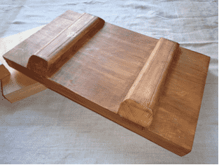
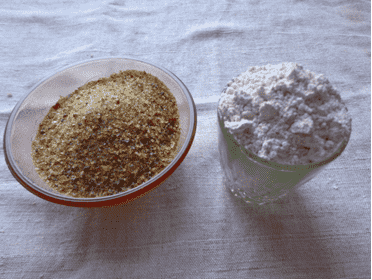
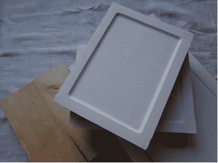
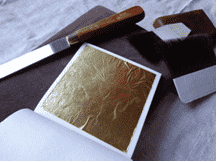
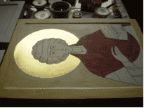
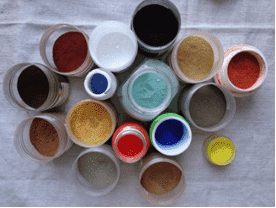
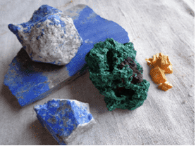
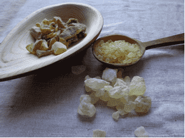

Как создается икона
В современном мире мы видим огромный выбор самых разнообразных икон – писаных и печатных, в живописной, академической манере и в каноне, с многочисленными орнаментами и украшениями и без них, в киотах, на картоне, ДВП, холсте, доске и т.д.
Почти все они – продут производства типографий, цена которых доступна каждому верующему человеку.
Однако, цена писаных икон гораздо выше, стоят особняком. Возникает естественный вопрос: что в писаном образе такого, что может стоить намного дороже обыкновенной типографской иконы?
Давайте разберемся по порядку.
Традиции православного иконописания складывались тысячелетиями, для изготовления доски и самого написания икон ( как, впрочем, и для всего остального, что посвящалось Богу) использовались наилучшие материалы, доступные человеку. Так, например, доска бралась из лучшего дерева, растущего в данном регионе. В южных странах это был кипарис, особо ценящийся своей древесиной, которую не точили мелкие жучки. На Руси, где лесных запасов больше, это стали липа, ольха, сосна. Древесина этих деревьев хорошо обрабатывается, достаточно плотна, прочна и долговечна. Для шпонок (небольшие досточки особой формы, которые врезаются в заднюю либо торцевую часть досок), чтоб как можно дольше сохранить целостность доски, бралось дерево дуба, как наиболее прочное и крепкое из всех известных.
Когда готова доска, можно приступить к проклейке доски, наклеиванию паволоки и нанесению грунта.
Паволока - это материя, предпочтительно льняная, которая наклеивается непосредственно на доску для того, чтобы в дальнейшем, по истечении значительного времени, при выгибании доски (что неизбежно) красочный слой получил как можно меньше повреждений.
Далее наносим особый грунт, который в иконописи называется левкасом. Для него берется осетровый, мездровый клея, либо желатин и смешивается в различных пропорциях (в зависимости от слоя) с промытым мелом, медом и льняным маслом.
Тонким слоем наносится такой грунт один раз в сутки на протяжении двух недель
После того, как нанесены все слои левкаса и доска достаточным образом подготовлена к написанию образа, можно приступать к рисунку и золочению.
Сперва наносится рисунок будущей иконы только в линиях, а затем, когда все контуры хорошо выверены и уже более не нуждаются в исправлении либо дополнении, кладется золото на нимб, и, если нужно, на фон и орнамент на поля.
И только после завершения этих операций можно начинать работу с красками. Мы для написания святых образов используем только натуральные природные пигменты, одни из которых относятся к земляным пигментам (это различные охры от светло-желтой до красной, умбры – от светло-коричневых до темно-коричневых).
Другие к минеральным пигментам (малахит, лазурит, глауконит, азурит, киноварь, аурипигмент и т.д.), которые либо продаются уже в готовых порошках, либо в камнях, которые нужно растирать в порошок.
Когда закончено написание образа, тогда икона должна постоять от 4х месяцев до полугода, потому что темперные краски ( так называются краски на яичном желтке и пигментах, которыми пишутся иконы) живые и на протяжении нескольких месяцев они выстаиваются и окончательно затвердевают, краски становятся твердыми как камень. После этого они сохраняют цвет на протяжении многих веков, не теряя прочность, а только укрепляясь. Это удивительное свойство темперных красок можно увидеть в действии, если посмотреть на иконы 11-16 вв. – краски на этих иконах сохранили свою первозданную сочность и яркость, они все так же сияют, как и раньше.
После того, как икона выстоялась, можно покрывать ее олифой – смесью льняного масла и различных смол. Для покрытия икон используются самые лучшие смолы: смола даммара, смола мастичного дерева, копаловая смола.
На этом работа иконописца заканчивается и можно передавать ее на освящение священнику, который читает молитвы над иконой и она полностью освящается. После того как священник освятил икону, создание ее на этом полностью завершено и можно передавать ее тому, кому она предназначалась.
Вот вы и увидели как создается икона, сколько на это уходит времени, труда и наилучших материалов. При этом, иконописец, когда работает над образом, всегда просит помощи в этой сложной и ответственной работе у Господа, Богородицы, у того святого, образ которого пишется. Иконописец напряженно духовно работает, когда пишет икону, если он будет забывать о молитве и труде над собой, над преодолением своих страстей, то все это будет видно на иконе, и образ получится не святым, а больше похожим на картинку, перед которой сложно углубиться в молитву, успокоиться от мирской суеты.
1.Рисунок и Золочение
2.Прорись
3.Pоскрышь
4.Горки, Домики
5.Пробела на одеждах.
6.Окончание.
7.При свете лампочки.
8.При свете лампочки.